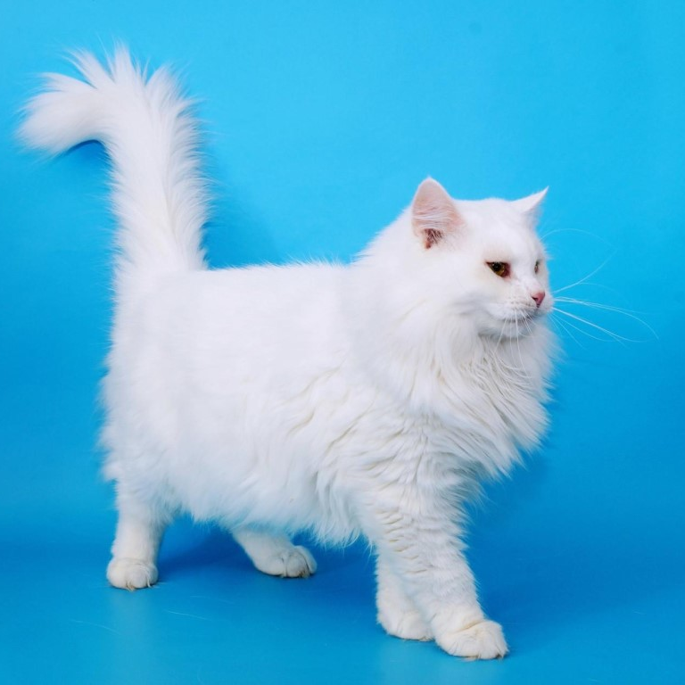

Турацкая ангора
| Родина и время возникновения | Порода признана | Окрас |
| Турция, XV в. | TICA, CFA, FIFe. | Все окрасы, включая черепаховые и дымчатые варианты, тебби (включая мраморный и тигровый варианты), серебристый тебби, биколоры. |
Характер
Турецкая ангора необычайно привязана к человеку, который заботится о ней и уделяет внимание. По своей натуре представители породы – социальные существа, ласково относящиеся к членам семьи. Поэтому данная порода идеальна для людей, ценящих присутствие животных в доме и готовых проводить с ними время.
Представители породы с удовольствием играют с детьми. Любят взаимодействовать с человеком. Их дружелюбие распространяется не только на членов семьи, но и на незнакомых людей. Если в доме появился гость, то ангора непременно пойдёт его приветствовать.
Они ладят с другими животными, быстро находят контакт с другими кошками, но только если они признают главенство турецкой ангоры. Кстати, рекомендуется заводить в качестве компаньона для ангоры ещё одну кошку или другое животное, т. к. представители породы плохо переносят одиночество. Оставаясь в одиночестве длительное время турецкая ангора чувствует себя подавленно.
Не прочь турецкая ангора наблюдать за происходящим в доме с высоты или расположившись в уютном месте.
У представителей породы сильно развит охотничий инстинкт. Животные не упустят возможность поохотиться за игрушкой или продемонстрировать своё мастерство в преследовании добычи на улице.
Кошки данной породы очень любознательны и игривы. Игривость сохраняется до старости. Вместе с тем у турецкой ангоры потрясающие способности к обучению. Развитый интеллект, любознательность и желание взаимодействовать с человеком позволяют обучить кошку простым трюкам или вплотную заняться аджилити.
Настойчивость кошек проявляется в том, что они склонны к мяуканью. Представители породы будут мяукать до тех пор, пока хозяин не поймёт желаний питомца.
Стоит отметить и находчивость животных, благодаря которой они достигают своей цели, например, находят способ раздобыть вкусный кусочек еды со стола, выйти на улицу.
Здоровье
Турецкую ангору в целом можно отнести к числу здоровых пород. Но животные склонны к серьёзным генетическим заболеваниям, среди которых стоит отметить гипертрофическую кардиомиопатию, атаксию, глухоту.
Глухота характерна для белых кошек с голубыми глазами, но это не означает, что все белые голубоглазые особи страдают от глухоты. Большинство животных здоровы.
При атаксии котята не доживают до зрелого возраста. Это наследственное заболевание, характеризующееся нервно-мышечным расстройством диагностируют у котят в возрасте 2-4 недель. К счастью, заболевание встречается редко.
Гипертрофическая кардиомиопатия диагностируется в возрасте 2-6 лет, чаще всего у особей мужского пола. Данное заболевание генетическое, встречается редко.